สวัสดีครับ 👋
Bowel Buddy พร้อมช่วยเหลือคุณในการดูแลสุขภาพทางเดินอาหารและการขับถ่ายอย่างถูกวิธี
ติดตั้ง Bowel Buddy ลงบนมือถือของคุณ
เพิ่มไอคอนแอปบนหน้าจอโฮมเพื่อเข้าใช้งานสะดวกยิ่งขึ้น
เมนูหลักทั้งหมด
ความรู้เบื้องต้น
อาการท้องผูก, ประเภทอุจจาระ, สาเหตุ
ระดับอาการบาดเจ็บและการปฏิบัติตัว
บาดเจ็บส่วนบน / ส่วนล่าง และเป้าหมายการดูแล
ภาวะฉุกเฉินและการเฝ้าระวัง
Autonomic Dysreflexia และเหตุฉุกเฉิน
แบบทดสอบประเมินความเข้าใจ
Pre-test (ก่อนเรียน) และ Post-test (หลังเรียน)
แบบประเมินความพึงพอใจ
ให้คะแนนดาว 1-5 ในแต่ละด้าน
เอกสารอ้างอิง
แหล่งข้อมูลทางวิชาการและวารสารการแพทย์
ความรู้เบื้องต้นเกี่ยวกับการขับถ่าย
อาการท้องผูก
ความหมาย นิยาม และแบบประเมินเช็กลิสต์
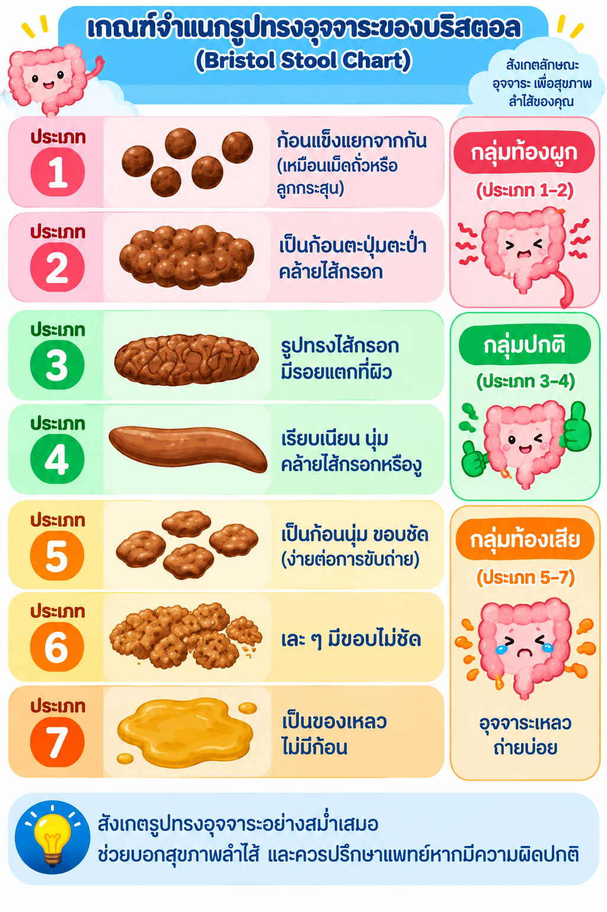
ประเภทอุจจาระ
เกณฑ์จำแนก Bristol Stool Chart
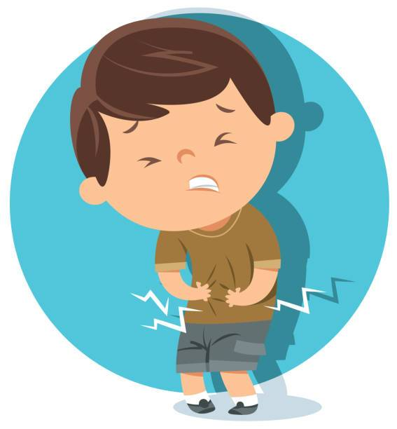
สาเหตุของอาการท้องผูก
ปัจจัยจากร่างกาย การดื่มน้ำ และระบบประสาท
อาการท้องผูก (Constipation)
คือ ภาวะที่มีการขับถ่ายอุจจาระน้อยกว่าปกติ อุจจาระแข็ง ขับถ่ายยาก ต้องออกแรงเบ่งมาก หรือมีความรู้สึกว่าถ่ายไม่สุด ซึ่งพบได้บ่อยในผู้ที่มีการเคลื่อนไหวร่างกายน้อยหรือผู้ที่มีภาวะบาดเจ็บไขสันหลัง
แบบประเมินเช็กลิสต์อาการท้องผูก
หากมีอาการดังต่อไปนี้ อย่างน้อย 2 ข้อ และเกิดบ่อยกว่า 1 ใน 4 ของครั้งการขับถ่าย อาจเป็นสัญญาณของภาวะท้องผูก:
ผลการประเมิน: ติ๊กเลือกแล้ว 0 ข้อ
กรุณาเลือกอาการที่พบเพื่อประเมินภาวะท้องผูก
หมายเหตุ: อุจจาระเหลวแทบไม่เกิดขึ้นเลยหากไม่ได้ใช้ยาระบาย
ประเภทอุจจาระ (Bristol Stool Chart)
แตะที่ภาพเพื่อเปิดดูรูปขนาดเต็ม
สาเหตุของอาการท้องผูก
- การเคลื่อนไหวร่างกายน้อยและการทำงานของลำไส้ลดลงตามสภาพร่างกาย
- การดื่มน้ำน้อยเกินไป (< 1.5-2 ลิตร/วัน)
- การรับประทานอาหารที่มีกากใยไม่เพียงพอ
- ความผิดปกติของการทำงานระบบประสาทไขสันหลัง
- การกลั้นอุจจาระเป็นประจำทำให้ลำไส้สูญเสียการตอบสนอง
ระดับอาการบาดเจ็บและการปฏิบัติตัว
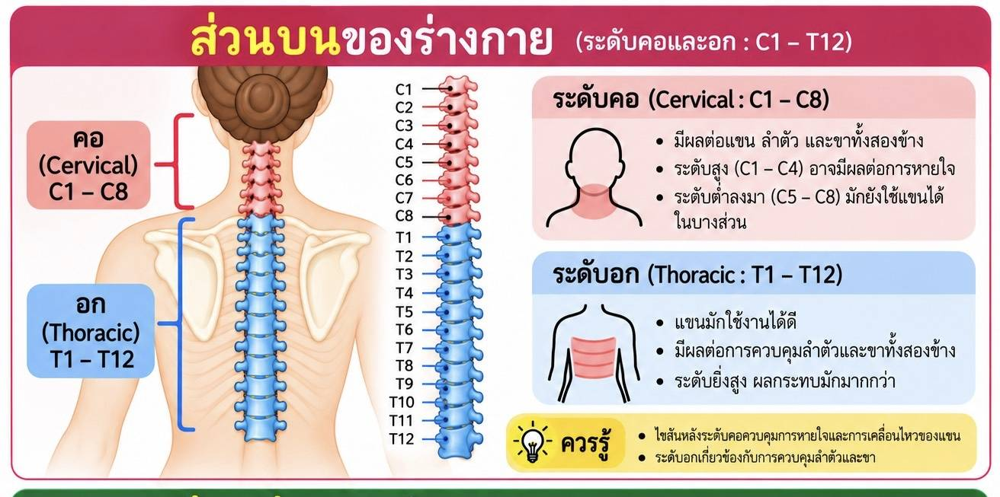
ส่วนบนของร่างกาย
บาดเจ็บระดับคอและอก (Reflex Bowel) และแนวทางปฏิบัติตัว
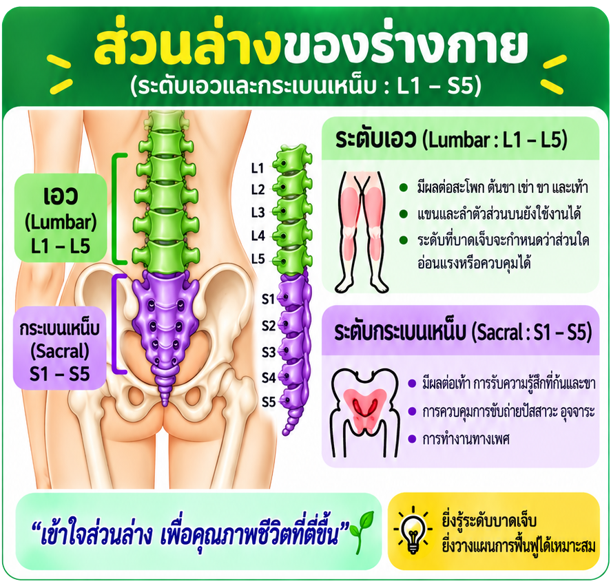
ส่วนล่างของร่างกาย
บาดเจ็บระดับเอวและกระเบนเหน็บ (Flaccid Bowel) และแนวทางปฏิบัติตัว
ส่วนบนของร่างกาย
แตะที่ภาพเพื่อเปิดดูรูปขนาดเต็ม
เป้าหมายและการดูแล (การบาดเจ็บไขสันหลังส่วนบน)
- ลักษณะอุจจาระ: อุจจาระประเภทที่ 4
- ความถี่ในการขับถ่าย: ถ่ายทุกวัน หรือวันเว้นวัน
สิ่งที่ต้องปฏิบัติเป็นประจำ
สิ่งที่ต้องปฏิบัติตัวทุกวัน
การดื่มน้ำ กากใย และการขับถ่ายตรงเวลา
การนวดหน้าท้อง
เทคนิคการนวดตามทิศทางลำไส้ใหญ่
การนวดกระตุ้นด้วยนิ้วมือ
Digital Rectal Stimulation (สำหรับ UMN)
ไม่ถ่ายเกิน 1 วัน ควรทำอย่างไร
การเหน็บล้วงด้วยสบู่ / ยาเหน็บ
วิธีใช้แท่งสบู่หรือยาเหน็บกลีเซอรีน
การล้วงอุจจาระ
Digital Evacuation อย่างปลอดภัย
การใช้ยาสวนทวารหนัก
ขั้นตอนการใช้น้ำเกลือสวนอย่างถูกวิธี
ส่วนล่างของร่างกาย
แตะที่ภาพเพื่อเปิดดูรูปขนาดเต็ม
เป้าหมายและการดูแล (การบาดเจ็บไขสันหลังส่วนล่าง)
- ลักษณะอุจจาระ: อุจจาระประเภทที่ 3
- ความถี่ในการขับถ่าย: ถ่ายทุกวัน หรือมากกว่า 1 ครั้ง/วัน
สิ่งที่ต้องปฏิบัติเป็นประจำ
สิ่งที่ต้องปฏิบัติตัวทุกวัน
การดื่มน้ำ กากใย และการขับถ่ายตรงเวลา
การนวดหน้าท้อง
เทคนิคการนวดตามทิศทางลำไส้ใหญ่
ไม่ถ่ายเกิน 1 วัน ควรทำอย่างไร
การเหน็บล้วงด้วยสบู่ / ยาเหน็บ
วิธีใช้แท่งสบู่หรือยาเหน็บกลีเซอรีน
การล้วงอุจจาระ
Digital Evacuation อย่างปลอดภัย
การใช้ยาสวนทวารหนัก
ขั้นตอนการใช้น้ำเกลือสวนอย่างถูกวิธี
สิ่งที่ต้องปฏิบัติตัวทุกวัน
รับประทานยาตามแผนการรักษา
ปฏิบัติตามคำสั่งแพทย์และทานยาให้ตรงเวลาสม่ำเสมอ เพื่อให้การดูแลระบบขับถ่ายเป็นไปอย่างมีประสิทธิภาพ
ดูแลให้ได้รับน้ำอย่างเพียงพอ
ดูแลให้ได้รับน้ำมากกว่า 1.5 – 2.5 ลิตร/วัน (ในรายที่ไม่มีข้อห้ามทางการแพทย์) เพื่อให้อุจจาระนุ่มและเคลื่อนตัวได้ง่าย
หลีกเลี่ยงเครื่องดื่มที่มีคาเฟอีน
งดหรือหลีกเลี่ยง ชา กาแฟ และเครื่องดื่มคาเฟอีน เพราะจะเพิ่มอาการท้องผูก เนื่องจากมีฤทธิ์ขับปัสสาวะ
รับประทานอาหารที่มีใยอาหารสูง
รับประทานอาหารให้เพียงพอ มีใยอาหารมากกว่า 25–30 กรัม/วัน
ตัวอย่างอาหารและมื้ออาหารไฟเบอร์สูง:
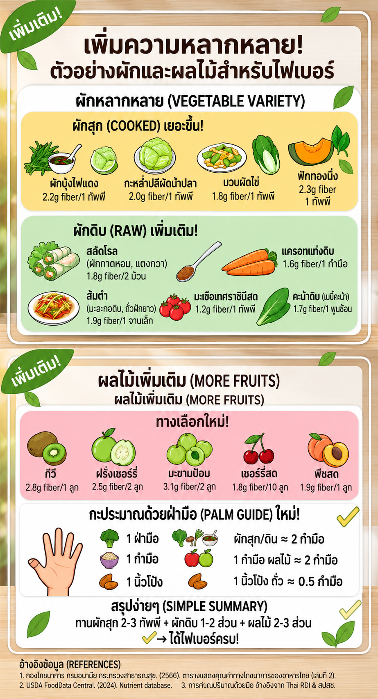
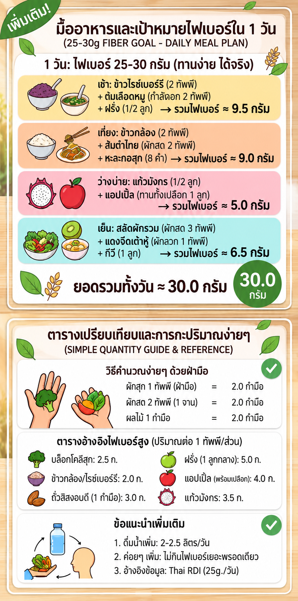
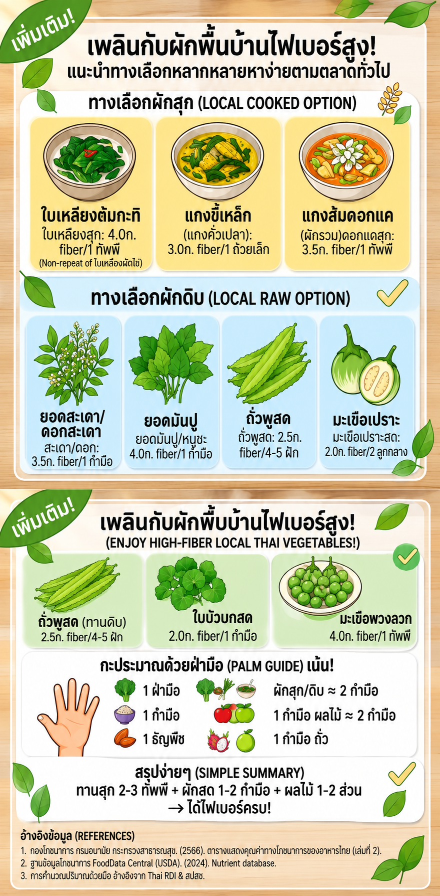
แตะที่ภาพเพื่อดูขยายเต็มจอ
การนวดหน้าท้อง
ข้อมูลการนวดหน้าท้อง
เป็นขั้นตอนของการฝึกการขับถ่ายอุจจาระในผู้ที่มีปัญหาท้องผูกเรื้อรังหรืออุจจาระคั่งในลำไส้ใหญ่ เพื่อกระตุ้นการเคลื่อนไหวของลำไส้โดยรวม ช่วยให้ขับถ่ายอุจจาระได้ง่ายขึ้น
ข้อควรปฏิบัติ
- ควรปัสสาวะหรือสวนปัสสาวะให้เรียบร้อยก่อนการนวด
- ควรนวดขณะท้องว่าง หรือหลังรับประทานอาหารแล้วอย่างน้อย 1 ชม. ขึ้นไป
- ผู้ป่วยสูงอายุที่มีโรคประจำตัวบางอย่าง เช่น โรคความดันโลหิตสูง ขณะทำการนวดให้สังเกตอาการผิดปกติ เช่น หัวใจเต้นเร็ว ความดันโลหิตสูง หรือปวดแน่นท้องให้หยุดนวดทันที
- ห้ามนวดผู้ป่วยที่มีแผลที่หน้าท้องที่ยังอักเสบอยู่
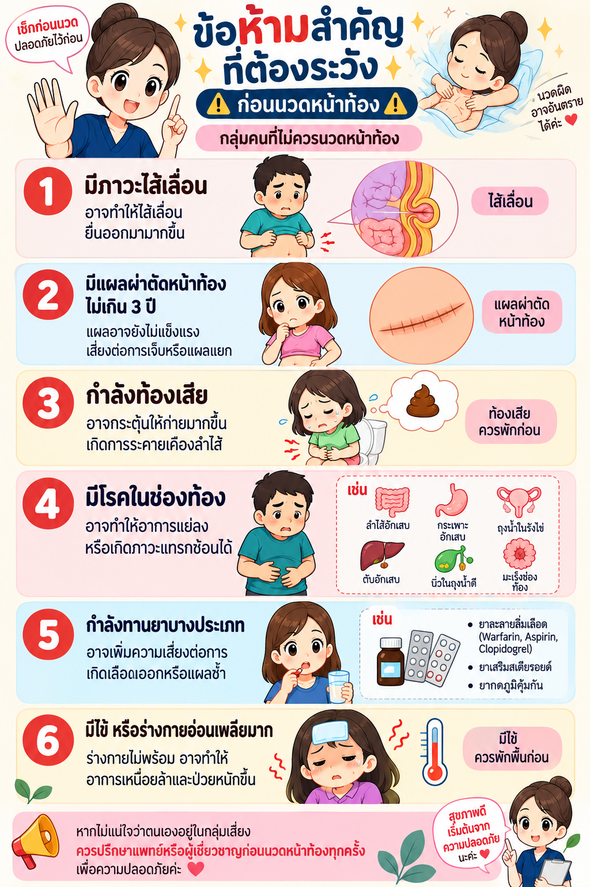
แตะที่ภาพเพื่อดูขยายเต็มจอ
การเตรียมตัว
- จัดท่านอนหงายในท่าที่สบายและจัดเสื้อผ้าให้เปิดบริเวณหน้าท้องเท่านั้น ในรายที่มีอาการเกร็งบริเวณหน้าท้องให้ใช้หมอนรองใต้ขาพับเพื่อให้กล้ามเนื้อหน้าท้องหย่อนตัว กรณีผู้ป่วยที่นวดหน้าท้องด้วยตนเองให้อยู่ในท่ากึ่งนั่งกึ่งนอน และใช้หมอนรองใต้เข่า
- ทาโลชั่น หรือเบบี้ออยล์บริเวณหน้าท้องก่อนการนวด
- วัดบริเวณที่นวดหน้าท้อง โดยใช้ตำแหน่งต่ำกว่า 2 นิ้วใต้กระดูกซี่โครง เพื่อป้องกันการบาดเจ็บของกระดูกอ่อน
- หลังจากนั้นให้เริ่มการนวดหน้าท้องประกอบด้วย 4 ท่า ดังนี้
ขั้นตอนการนวดหน้าท้อง 4 ท่า
1 ท่าที่ 1 ทำนวดตามแนวเส้นตรง
แบ่งแนวหน้าท้องตามยาวจากบนลงล่างห่างจากสะดือ 2 นิ้วมือ ข้างละ 2-3 แนว นำมือสองข้างประสานกัน ใช้นิ้วมือระหว่างข้อที่ 1 และข้อที่ 2 กดหน้าท้องความลึกประมาณ 1 1/2 - 2 นิ้ว แล้ววนตามเข็มนาฬิกาครั้งละ 5 รอบ ตามแนวเส้นตรงที่แบ่งไว้ จากนั้นเลื่อนมือให้ต่อกันกับวงแรก และทำซ้ำเดิมตามแนวที่กำหนดไว้จนครบทุกแนว
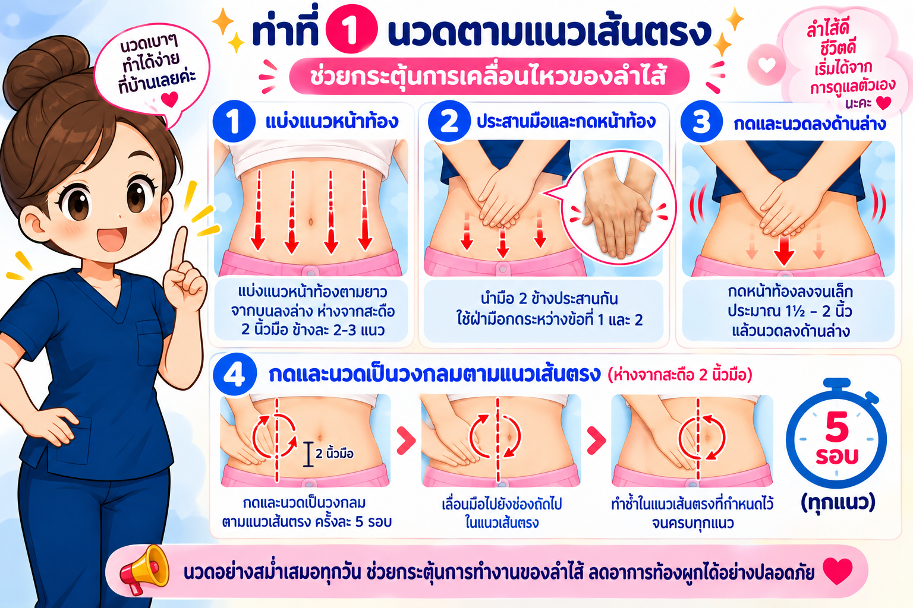
2 ท่าที่ 2 ท่าโกยลำไส้
ประสานมือเข้าด้วยกันตามรูปและใช้บริเวณสันมือนวดแบบรีดตั้งแต่บริเวณกลางสะดือจนถึงหัวหน่าว ทำให้ทั่วหน้าท้อง ประมาณ 10 - 15 ครั้ง
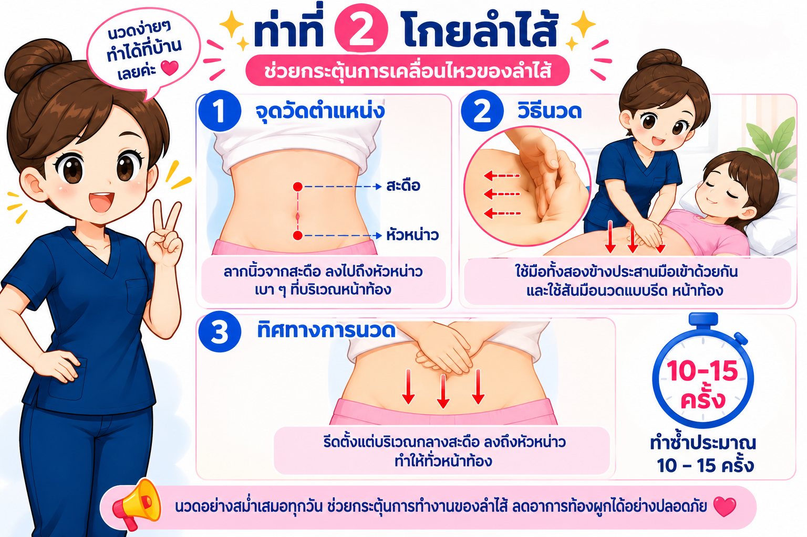
3 ท่าที่ 3 ท่าโยกลำไส้
ประสานมือตามรูป ใช้ส้นมือทั้งสองข้างนวดดันหน้าท้องด้านใกล้ตัวไปด้านตรงข้าม แล้วใช้ปลายมือโกยหน้าท้องกลับเข้าหาตัวผู้นวด ทำซ้ำให้ทั่วหน้าท้องประมาณ 15 - 20 ครั้ง
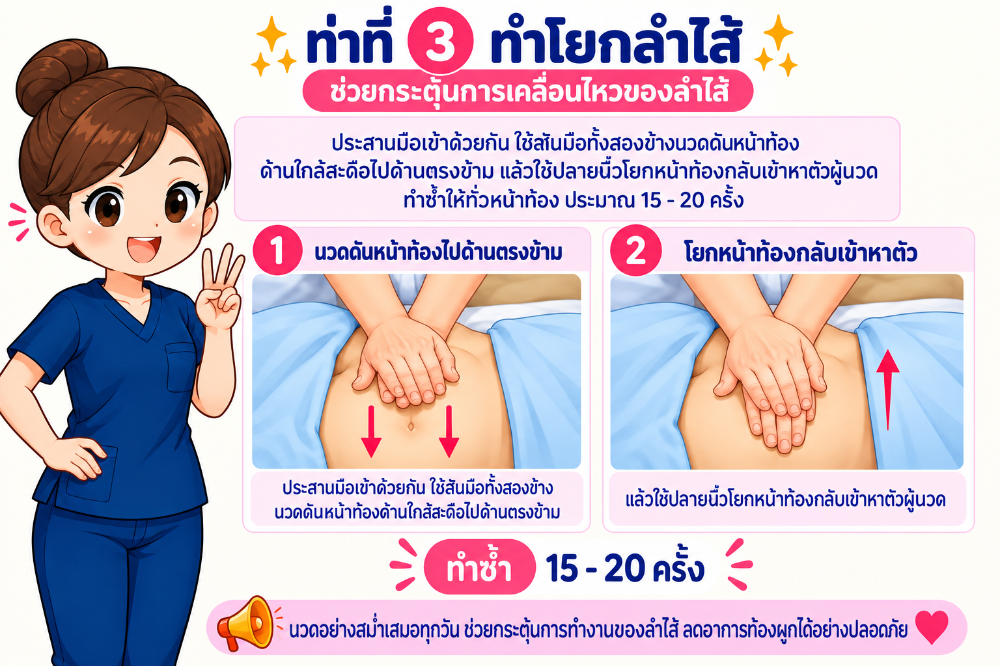
4 ท่าที่ 4 ท่านวดตามเข็มนาฬิกา
ใช้วิธีนวดตามแบบท่าที่ 1 แต่ทิศทางวนตามเข็มนาฬิกาให้วนจากรอบสะดือออกมาด้านนอก ทำให้ทั่วหน้าท้องโดยเน้นลำไส้ใหญ่ข้างลำตัวด้านซ้าย
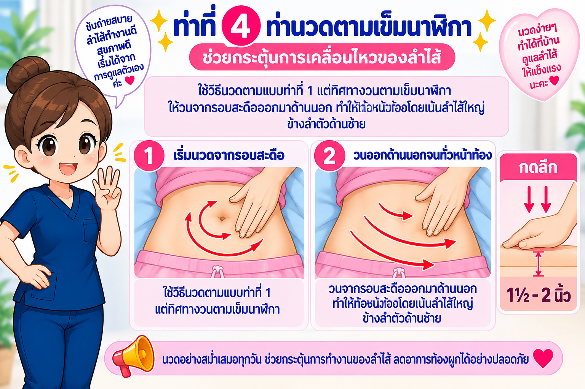
หมายเหตุ:
- ทุกท่าของการนวดควรกดลึกประมาณ 1 1/2 - 2 นิ้ว
- ระยะเวลาในการนวดหน้าท้องท่าที่ 1 - 4 ใช้เวลา 10 - 15 นาที
การนวดกระตุ้นด้วยนิ้วมือ
การนวดกระตุ้นทวารหนักด้วยนิ้วมือ (Digital Rectal Stimulation)
ทำเฉพาะ ผู้ที่บาดเจ็บไขสันหลังส่วนบน UMN
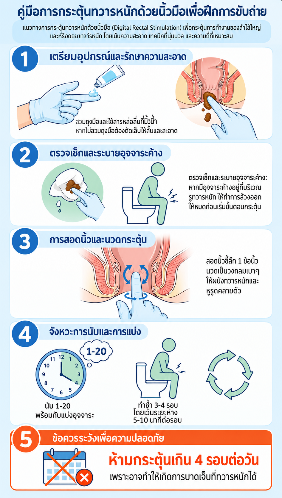
แตะที่ภาพเพื่อดูขยายเต็มจอ
ข้อควรระวัง
- ในกรณีที่มีริดสีดวงทวารไม่ควรใช้วิธีนี้ จนกว่าจะรักษาหาย
- ขณะกระตุ้นถ้าพบเลือดออกควรหยุดปฏิบัติทันที ควรหยุดประมาณ 1 – 2 วัน จึงเริ่มต้นใหม่
- ในกรณีที่มีอาการท้องเสีย ปวดท้อง หรืออย่างใดอย่างหนึ่ง ให้งดฝึกขับถ่ายอุจจาระ จนกว่าจะไม่มีอาการหรือรักษาหายเป็นปกติ
การเหน็บล้วงด้วยสบู่ / หรือยาเหน็บ
ข้อควรระวังก่อนเหน็บยา/สบู่ทางทวารหนัก
- ตรวจสอบชนิดและวิธีใช้ให้ถูกต้อง
- ประเมินว่ามีแผล เลือดออก ปวด หรืออักเสบบริเวณทวารหนักหรือไม่
- ถ่ายอุจจาระก่อนเหน็บ หากสามารถทำได้
- ทำความสะอาดบริเวณทวารหนักและล้างมือให้สะอาด
- หากผลิตภัณฑ์นิ่ม ให้ทำให้แข็งตามคำแนะนำ ห้ามแช่ช่องแช่แข็ง
- ใช้สารหล่อลื่นที่เหมาะสมเมื่อจำเป็น
- ห้ามฝืนหรือใช้แรงดันมาก หากเจ็บหรือติดให้หยุดทันที
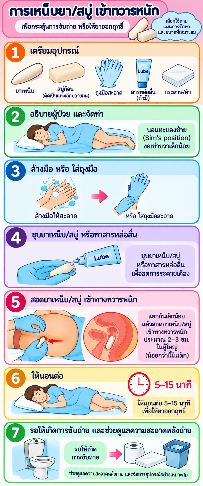
แตะที่ภาพเพื่อดูขยายเต็มจอ
วิธีการทำสบู่:
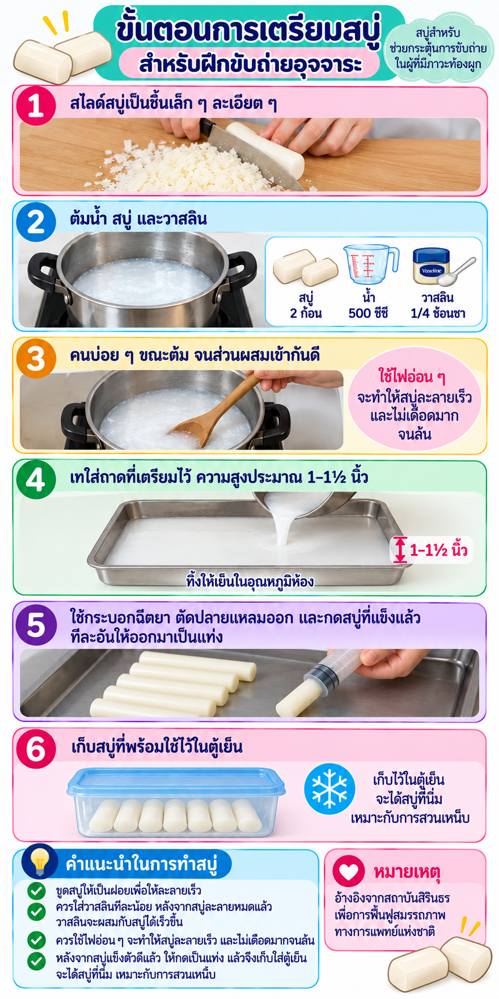
แตะที่ภาพเพื่อดูขยายเต็มจอ
การล้วงอุจจาระ
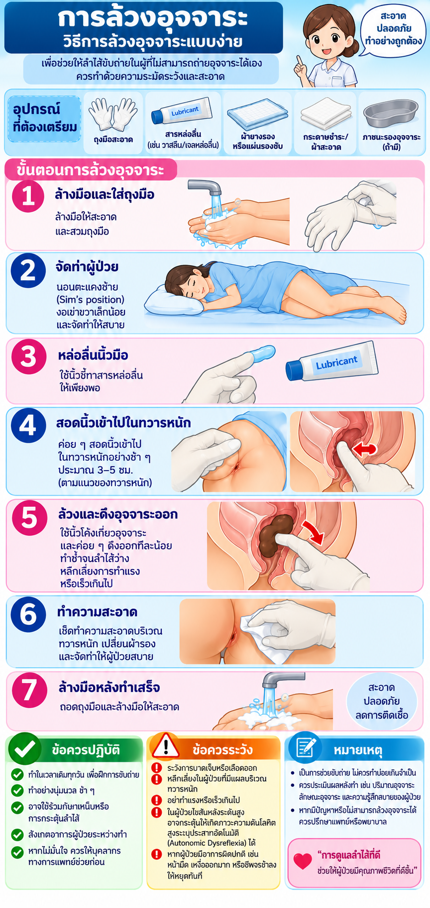
แตะที่ภาพเพื่อดูขยายเต็มจอ
การใช้ยาสวนทวารหนัก
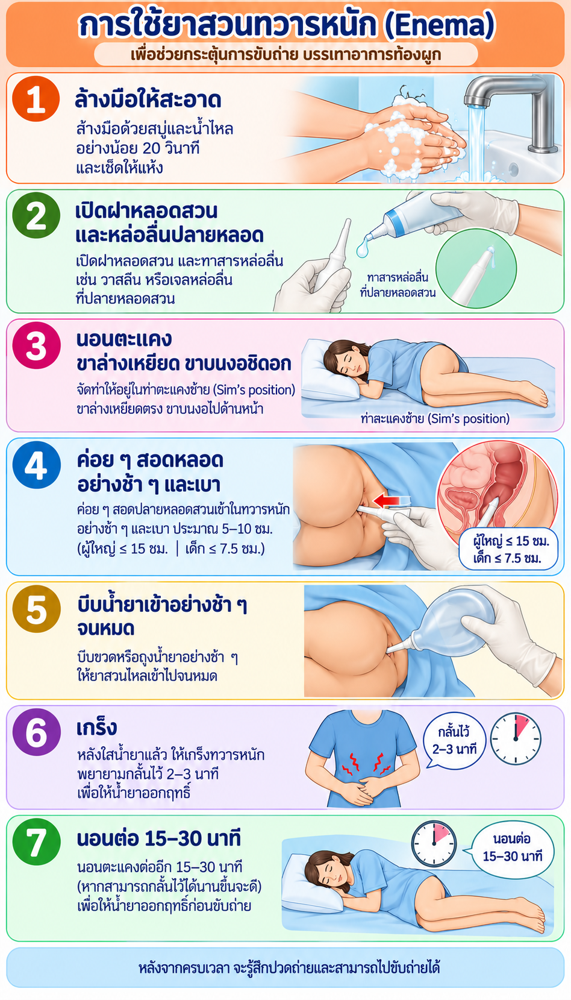
แตะที่ภาพเพื่อดูขยายเต็มจอ
ภาวะฉุกเฉินและการเฝ้าระวัง
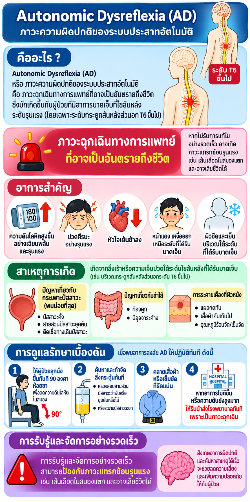
Autonomic Dysreflexia (AD)
สาเหตุและสัญญาณเตือนฉุกเฉิน
เหตุฉุกเฉิน
ติดต่อสายด่วน 1669
Autonomic Dysreflexia (AD)
แตะที่ภาพเพื่อดูขยายเต็มจอ
Autonomic Dysreflexia (AD) คืออะไร?
ภาวะความดันโลหิตสูงเฉียบพลันที่อันตรายถึงชีวิต พบได้บ่อยในผู้ป่วยบาดเจ็บไขสันหลังระดับอกที่ 6 (T6) ขึ้นไป เกิดจากระบบประสาทตอบสนองต่อสิ่งกระตุ้นที่เป็นอันตรายใต้ระดับรอยโรคอย่างรุนแรงโดยไม่สามารถควบคุมได้
สัญญาณเตือนอันตราย (Symptoms)
สาเหตุที่พบบ่อยที่สุด
- ระบบขับถ่าย (Bowel): อุจจาระคั่งค้าง แน่น ท้องผูกรุนแรง หรือเกิดขณะกระตุ้น/ล้วงอุจจาระ
- ระบบทางเดินปัสสาวะ (Bladder): กระเพาะปัสสาวะตึงแน่น สายยางปัสสาวะพับ งอ อุดตัน หรือติดเชื้อ
- สาเหตุอื่น: แผลกดทับ เสื้อผ้า/สายรัดแน่นเกินไป เล็บขบ หรือการเปลี่ยนแปลงอุณหภูมิฉุกเฉิน
ขั้นตอนการปฐมพยาบาลและแก้ไขทันที
- 1 จัดให้นั่งตัวตรง (90 องศา): ปล่อยขาห้อยลงทันที เพื่อช่วยลดความดันโลหิตในสมอง
- 2 ปลดสิ่งคับรัด: คลายเสื้อผ้า กางเกง ถุงเท้า หรือผ้ารัดหน้าท้องออกทันที
- 3 ตรวจเช็คปัสสาวะ: ตรวจดูสายสวนปัสสาวะว่าพับ งอ หรืออุดตันหรือไม่ หากตึงแน่นให้เทปัสสาวะออกทันที
- 4 ตรวจเช็คการขับถ่าย: หากเกิดขณะนวด/ล้วงอุจจาระ ให้หยุดทำทันที หากมีอุจจาระคั่งค้างให้ใช้เจลหล่อลื่นผสมยาชา (Xylocaine Jelly) ทาเหน็บแล้วล้วงอย่างเบามือ
- 5 พบแพทย์ทันที: หากอาการไม่ดีขึ้นหรือความดันโลหิตยังคงสูง ให้รีบนำส่งโรงพยาบาลหรือโทร 1669
แบบทดสอบประเมินความเข้าใจ
เลือกทำแบบทดสอบวัดความเข้าใจก่อนเรียนหรือหลังเรียน
แบบทดสอบ Pre-test (ก่อนเรียน)
ทดสอบวัดความรู้พื้นฐานก่อนศึกษาคู่มือ
แบบทดสอบ Post-test (หลังเรียน)
ประเมินผลความเข้าใจหลังศึกษาคู่มือ
แบบทดสอบ Pre-test (ก่อนเรียน)
ทดสอบความรู้ความเข้าใจก่อนเริ่มศึกษาคู่มือดูแลระบบขับถ่าย
คะแนน: 0/5
ระดับความเข้าใจ: -
คำแนะนำเฉพาะคุณ:
-
แบบทดสอบ Post-test (หลังเรียน)
ประเมินผลสัมฤทธิ์และความเข้าใจหลังศึกษาคู่มือการดูแล
คะแนน: 0/5
ระดับความเข้าใจ: -
คำแนะนำเฉพาะคุณ:
-
แบบประเมินความพึงพอใจ
ให้คะแนนความพึงพอใจดาว 1 - 5 ดาวในแต่ละหัวข้อ
เอกสารอ้างอิง
แหล่งข้อมูลทางวิชาการและการอ้างอิงในคู่มือ
Neri, F., Tack, J., & Camilleri, M. (2026). Application of Rome V criteria in neurogenic bowel disorders. Neurogastroenterology & Motility, 38(3), Article e14890.
https://doi.org/10.1111/nmo.14890สถาบันสิรินธรเพื่อการฟื้นฟูสมรรถภาพทางการแพทย์แห่งชาติ. (2562). คู่มือการดูแลคนพิการบาดเจ็บไขสันหลังสำหรับผู้ดูแล. กรมการแพทย์ กระทรวงสาธารณสุข.
snmri-e-library (คู่มือการดูแลคนพิการ)Ko, H.-Y. (2022). Management and rehabilitation of spinal cord injuries (2nd ed.). Springer Nature Singapore.
https://doi.org/10.1007/978-981-19-0228-4คณะพยาบาลศาสตร์ มหาวิทยาลัยขอนแก่น. (2567). วารสารพยาบาลศาสตร์และสุขภาพ, 47(2).
ThaiJO - วารสารพยาบาลศาสตร์และสุขภาพเข้าสู่ระบบหลังบ้าน
กรุณากรอก Username และ Password เพื่อเข้าใช้งาน
ระบบหลังบ้าน (Admin)
รายงานแบบประเมินและแบบทดสอบ
0.0
เฉลี่ย 5 ข้อ (เต็ม 5.0)
0
รายการ